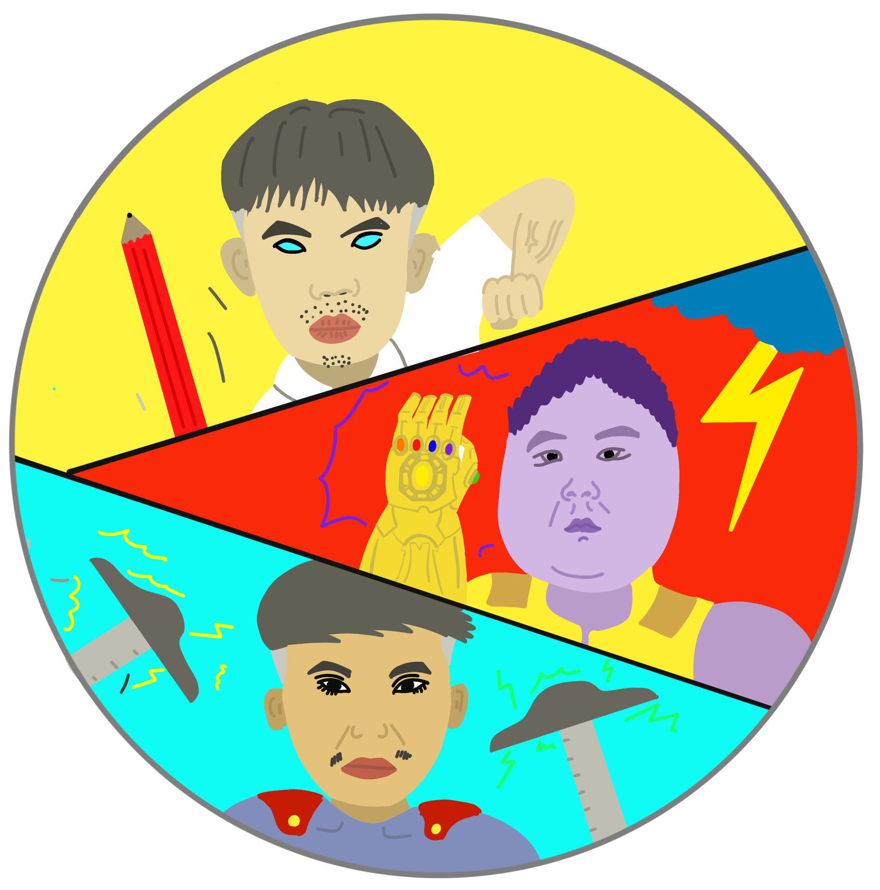
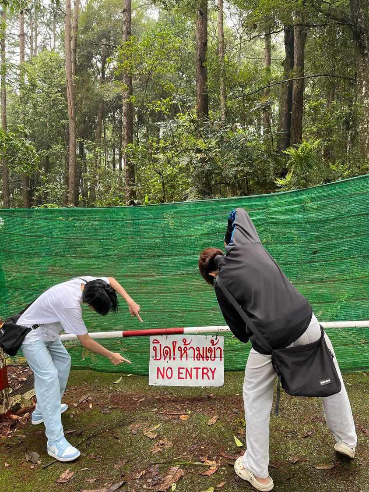
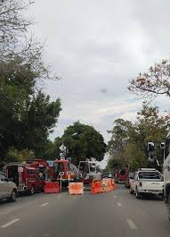

Project
ได้ทำเกมกับเพื่อนๆโดยที่ทำจะเป็นเกม TAP TO GRADUATION ได้แรงบันดาลใจมาจากเกม TAP TITANS โดยคอนเซปเป็นนักเรียนที่เข้ามาเรียนในมหาลัยและเจอกับการเรียนที่หนักหน่วง นำมาเป็นบอสในการต่อสู้ของเกมและมีตัวละครหลักเป็น โอ๊ต ป๋อง และมิ้ง
My hobby
งานอดิเรกของผมคือการเล่นเกมเป็นส่วนใหญ่แต่ในช่วงไม่กี่เดือนนี้ก็เริ่มไปทำอย่างอื่นเช่น อ่านหนังสือ ปลูกต้นไม้ ขึ้นเขาขึ้นดอยบ้าง
ประสบการณ์ในมอ
ประสบการณ์ที่ทุกคนต้องเจอให้มอคือเรื่องการสัญจรรถที่มีความติดเป็นอย่างมากและเป็นอะไรที่เด็กมช.ต้องเจอกันทุกวันโดยเฉพาะการเลิกเรียนคาบเช้าคาบแรกซึ่งจะติดเป็นพิเศษที่RB5เพราะประตูมันปล่อยคนได้แค่ทีละคันแล้วถ้าเราเลิกช้าจะทำให้ต้องต่อคิวออกนานมากๆบวกกับอากาศที่ร้อนระอุของประเทศเชียงใหม่เข้าไปแล้วผลรวมคือสรมารถฆ่สเด็กมช.ได้เลยทีเดียว